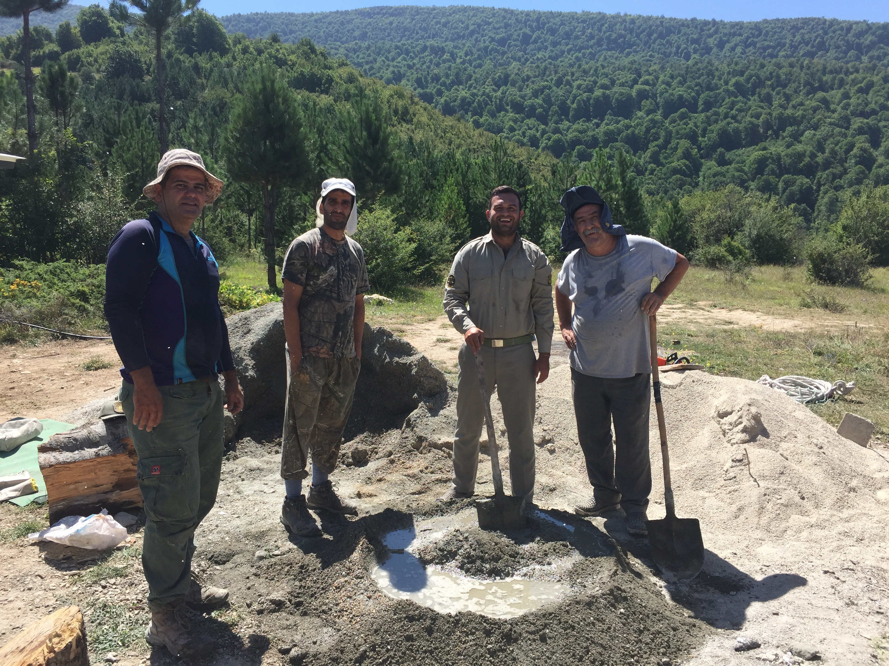
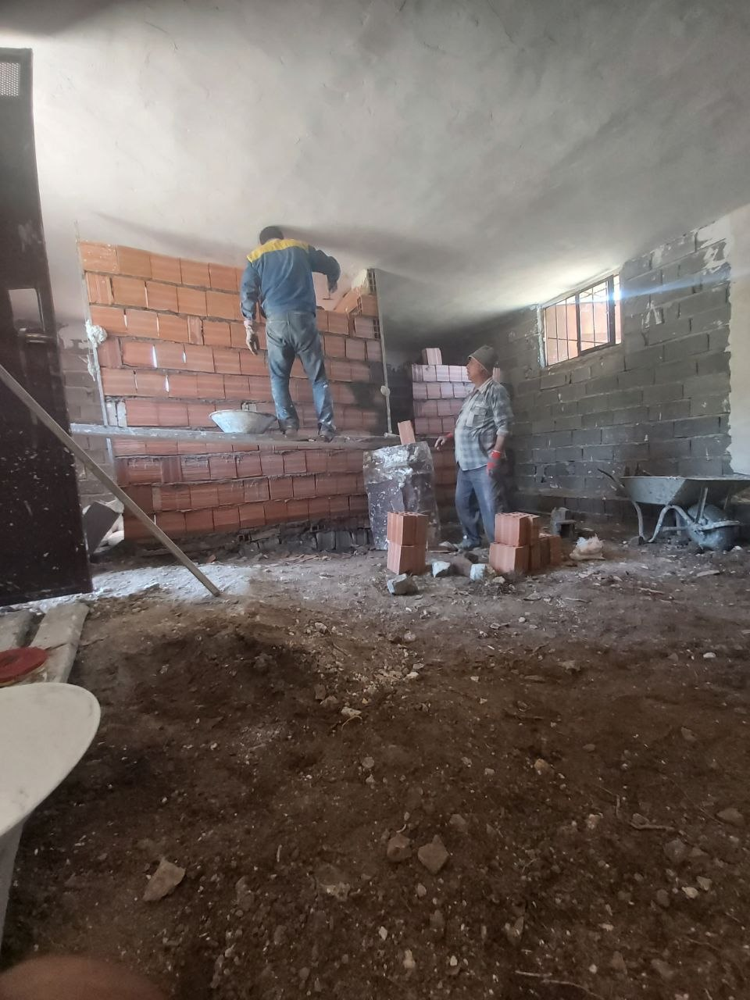
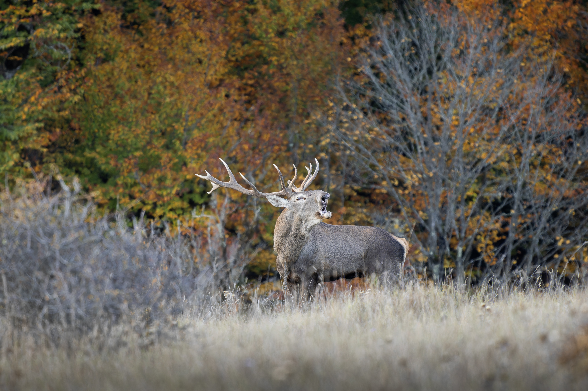
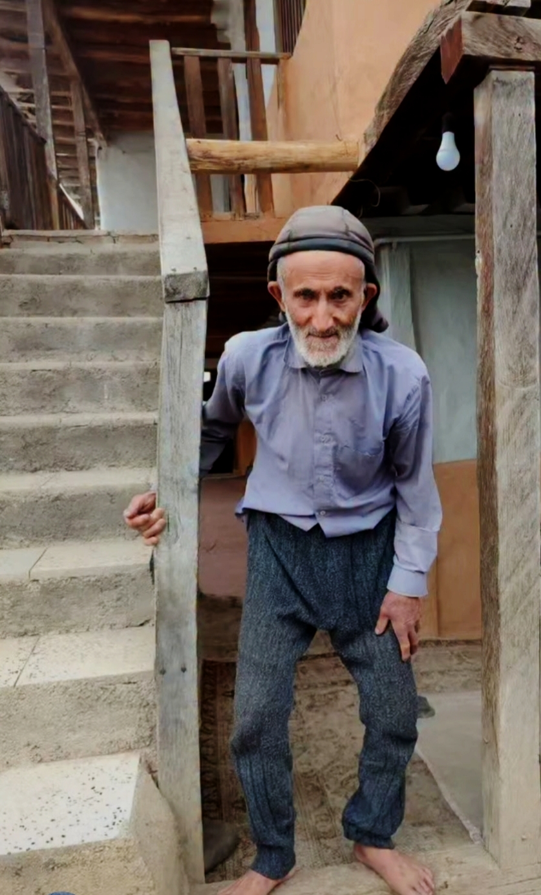

داستان شکلگیری پاسگاه
پاسگاه محیطبانی کینوا، حاصل همدلی، همراهی و مشارکت مردم برای حفاظت از طبیعت ارزشمند هزارجریب است.
ساخت این پاسگاه با اهدای زمین و تلاش همیاران محیطبانی آغاز شد و با مشارکت مردم به سرانجام رسید.
۱۳۹۸آغاز ساخت
۱۳۹۹پایان ساخت
به همت همیاران محیطبانی کینوا
این پاسگاه با تلاش و مشارکت همیارانی ساخته شد که حفاظت از طبیعت را مسئولیتی مشترک میدانند.

همراهی مردم، پشتوانه حفاظت از طبیعت

تصاویری از تلاش همیاران در ساخت بنا و انبار پاسگاه
حیاتوحش شاخص جنگل کینوا

مرالشوکاخرس
پلنگسیاهگوشقرقاول
جنگلهای کینوا زیستگاه گونههای ارزشمند حیاتوحش است؛ گونههایی که حفاظت از آنها نیازمند آرامش زیستگاه و همراهی همه ماست.
به احترام نیکاندیشی

آقای محمد یونسزاده
زمین محل احداث پاسگاه محیطبانی کینوا را با نیکاندیشی اهدا کردند؛ اقدامی ارزشمند که زمینه شکلگیری این مجموعه را فراهم کرد.